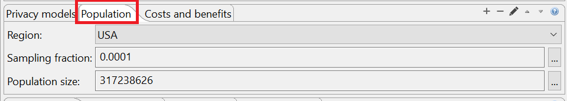

Methods for estimating the number of population uniques in a dataset require some basic data about the population from which the dataset was sampled. ARX provides default settings for populations, such as the USA, UK, France or Germany, which can be selected in the following area in the configuration perspective:
It is important that the underlying population matches the population that the anticipated adversary is likely to know that the data has been sampled from. If the required data is not provided by ARX, it can also be entered manually.
Note: Methods for estimating population uniqueness assume that the dataset is a uniform sample of the population. If this is not the case, results may be inaccurate.